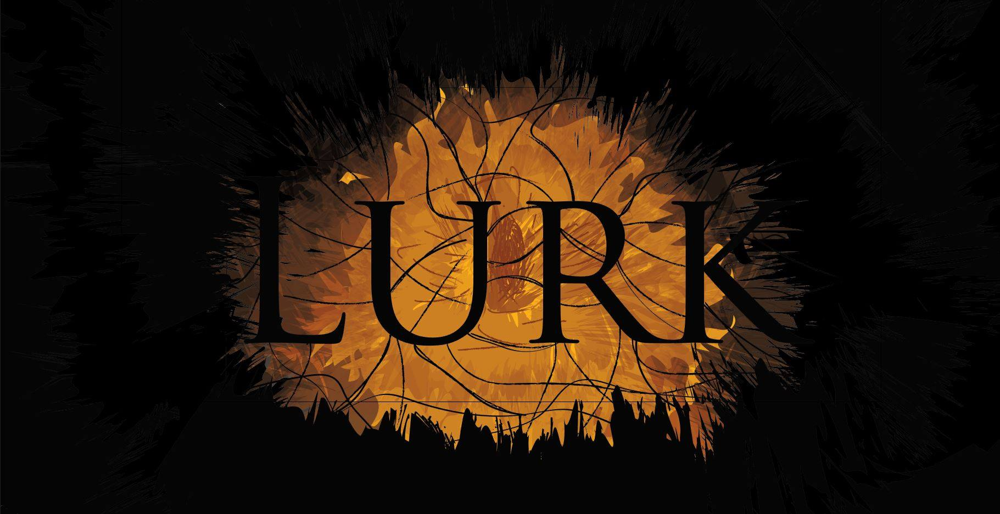

Lurk

Our current project is a two-player 2d platform called Lurk. In this game two players will work together using a lantern to solve puzzles and bring light back to a world overcome with darkness. Highlights of this game include a mysterious dark atmosphere, as well as a functioning game involving networking.
© 2015 GADIG